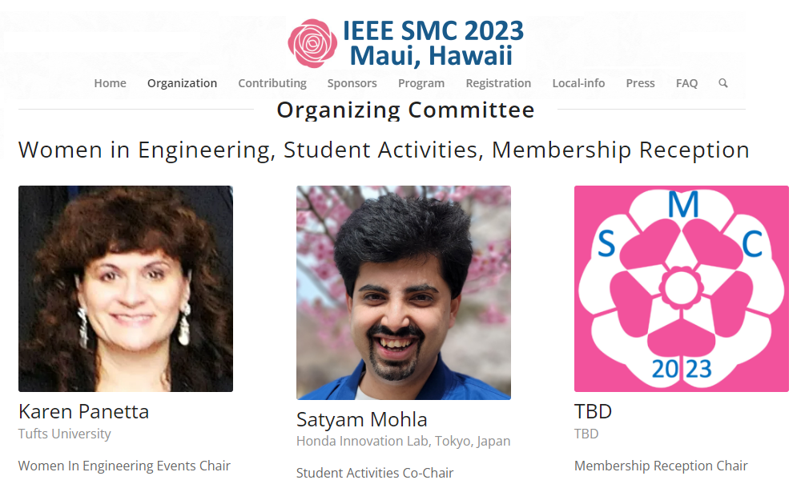
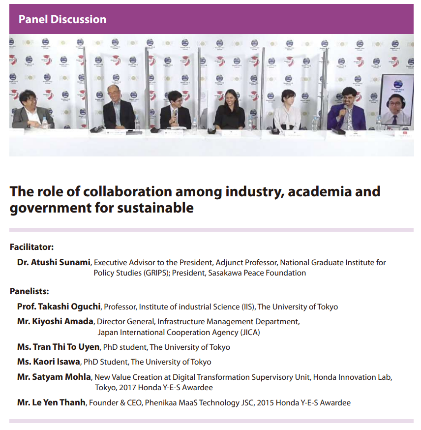
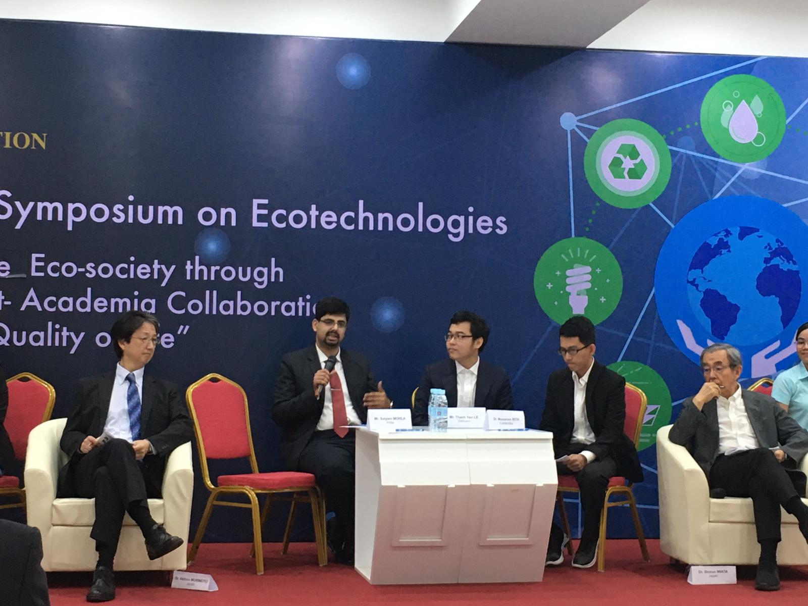
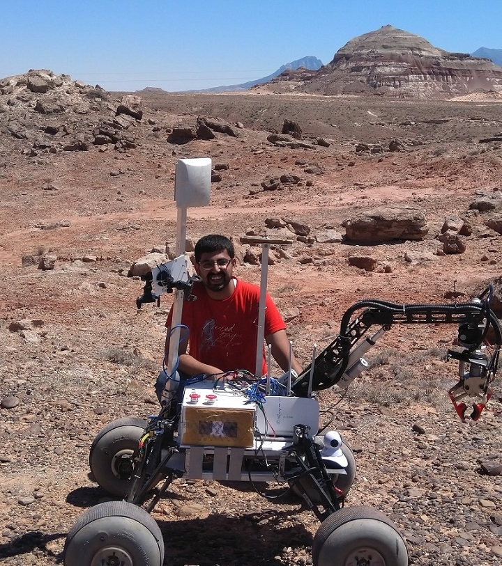

satyam mohla
सत्यम मोहला
सत्यम मोहला

Honda Innovations, Tokyo
Honda Motor Co., Ltd.
Professional ENGAGEMENTS
Organising Committee · Co-Chair, Student Activities
2023 IEEE International Conference on Systems, Man, and Cybernetics
November 2022 - Oct 2023

IEEE SMC 2023 will take place at the Hyatt Maui in Maui, Hawaii on October 1-4, 2023. The conference, which is organized by the IEEE Systems, Man, and Cybernetics Society, aims to bring together researchers, educators, and practitioners to share knowledge and discuss innovations in the fields of systems science and engineering, human-machine systems, and cybernetics. The theme of SMC 2023 is "Improving the Quality of Life." In addition to technical sessions, the conference will also feature keynote addresses, tutorials, workshops, panel discussions, forums, exhibits, and membership receptions.
Additional Information: Official Website
India Lead · Core Organising Team · Panelist
Honda Ecotechnology Forum, Tokyo
April 2019 - July 2021

The Honda Foundation held its Honda Y-E-S Online Forum 2021 on July 10 and 11, 2021 at the Honda Yaesu Building on the theme "Integrating Sustainability into Future Urban Design." The Forum was organized by awardees of the Honda Y-E-S Award, which the Honda Foundation promotes in Vietnam, India, Cambodia, Laos, Myanmar and Bangladesh to engage young scientists and engineers from Asia, including Japan, in discussions on their awareness of issues in the region, the role played by science and technology in resolving these issues.
Initially scheduled to take place in 2020, the COVID-19 pandemic forced postponement of the Forum, and it was held online in 2021. The program consisted of presentations by three guest speakers representing the fields of urban engineering and traffic engineering plus an international cooperation organization in Japan, followed by presentations by the Honda Y-E-S Awardees and a panel discussion.
Additional Information: Official Report / Press Release / Forum 2021 Booklet
Panelist
International Symposium on Ecotechnologies, RUPP Cambodia
December 2019, Phnom Penh, Cambodia

The Honda Foundation held a symposium titled “Achieve an Eco-society through Industry-Government-Academia Collaboration toward Sustainability & Quality of Life” in Phnom Penh, the capital of Cambodia, on December 12–13, 2019, in cooperation with the Royal University of Phnom Penh.
The event was attended by Dr. Michiharu Nakamura, Counsellor to the President of the Japan Science and Technology Agency (JST) and member of UN IATT-STI 10, Dr. Nobuko Kashiyama, Senior Vice President of the Japan International Cooperation Agency (JICA), Dr. Kalyan Mey, Senior Advisor, Supreme National Economic Council Royal Government of Cambodia, and approximately 200 representatives from the Honda Foundation and research and educational institutions in Cambodia.
Additional Information: Official Report / Press Release / News, Khmer Times, 2019
IIT Bombay Mars Rover Team: Division Head, Research and Biosciences
Sept 2016 - Aug 2018
The IITB Mars Rover project is a student initiative at IIT Bombay to build a prototype Mars rover capable of performing extra-terrestrial robotics and carrying out scientific experiments, participating in the University Rover Challenge at the Mars Society’s Mars Desert Research Station, Utah. I served as the division head of Biosciences & Research, responsible for the instumentation and biosensing stack on the rover and performing autonomous sample collection and onboard scientific experimentation. I often coordinate with Electical Division for ROS integration, and with Mechanical division to work on sample collection. Biosciences consists of Bioassembly, Astrobiology, Geosciences and Research sub-divisions. As such I am also responsible for developing and acquiring novel research tools, like adapting an pocket-size NIR micro-spectrophotometer called Scio to our onboard rover sensing stack.

Additional Information: 2018 Promo Video / 2017 Promo Video / Poster
Co-Founder, TechForSociety, Social Initiative
Nov 2017 - May 2020
TechForSociety is a social project started with an aim to utilize the young engineers of tomorrow in premier technical institutes like IITs to cater to the technology needs of rural areas. We aim to develop grassroots understanding to work on fundamental social issues and design low cost technology interventions and solutions to solve various problems faced by society today. We have been active for more than two years and have developed many prototypes for water accessibility & water management problems in villages. We have advised NGOs at grassroots level on technical issues & already created huge impact in those areas, and won various grants & awards.